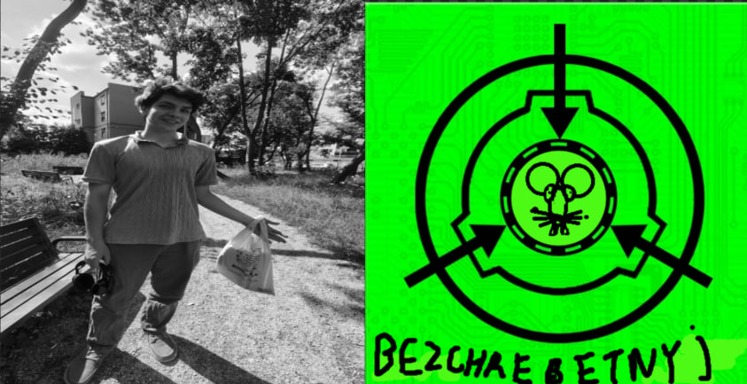

Object№ 2: Olek Sierkich

Объект №: 2
Класс: Bezchrebetnyj
Возраст: Молодой
характер: скверная сорока
описание:много ммр в доте2, общительный любит споры и дискусии но не очень любит подбирать слова из-за чего может задеть некоторых, свободолюбивий либерал виступает за легализацию наркотиков и свободного интернета
история похождения: Обект родился в обичной семье и с ранего детсва проявлял необичную любовь к спорам в интернете, под действием алкоголя, вскорее присойденился к партии пиратов украины, благодаря харизме быстро приобрел известность в узких кругах и был приглашен на молодежные политические форумы где лично пересекался с такими политиками как Дональд Туск, Славомир Ментцен, Рафал Тшаковский, и приносил им кофе. к сожелению несмотря на то что Украина стала страной в какой-то момент топ один по пиратсву организация распалась, политический талант обекта№2 так и не был раскрыт и он ушел в запой
примечания:
основатель волейбольного клуба
проиграл два турнира в кс2
работал пожарником
способ сдерживания: школьный шкафчик
autor: Виктор©